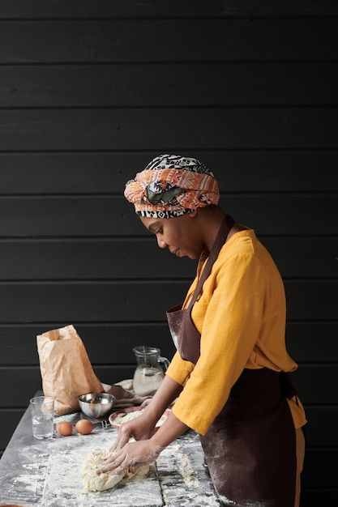

Meet Our Team

Chef Amina
Head Chef – Mastering traditional recipes with a creative flair.

Chef Kwame
Sous Chef – Expert in blending bold flavors and spices from across Africa.

Manager Fatou
Restaurant Manager – Ensuring every guest enjoys an exceptional dining experience.